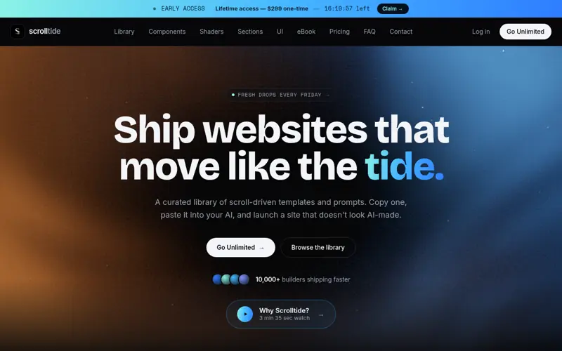

scrolltide.co

№ 013D 提示词3D prompts
Scrolltide
scrolltide.co ↗滚动驱动 / 3D 网站的提示词与模板库，复制提示词丢给 AI 即可复刻电影感网站，附完整源码。适合想用 AI 快速做出高级感落地页的人。
Scroll-driven & 3D website prompts and templates with full source — paste a prompt into your AI to build a cinematic site.
A curated library of scroll-driven website templates and AI prompts. Copy a prompt, paste it into your AI, and launch a site that actually moves.
@amananimates 推荐 · 原帖post ↗Recommended by @amananimates · 原帖post ↗